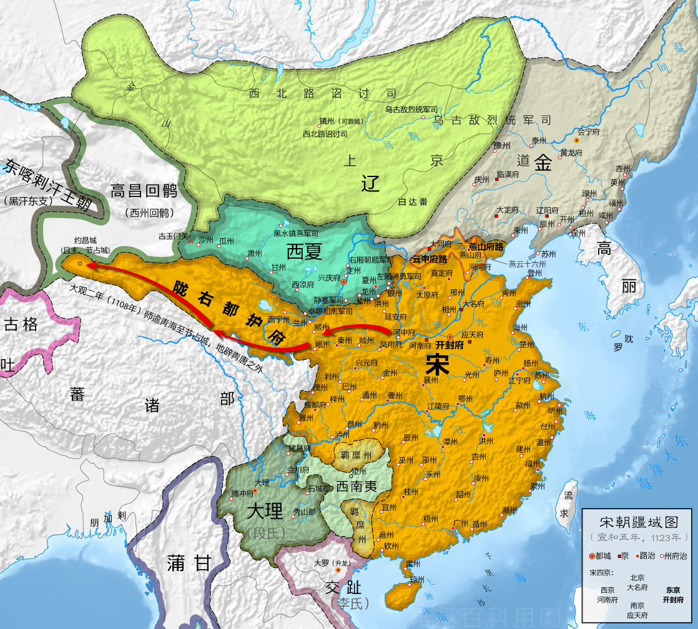

文忠公 · 年谱札记
资料来源与系年说明 ↓A LIFE IN MOTION · 1037—1101
苏轼年表
从眉山到海南，沿着苏轼的宦游路线读他的诗词、文章与尺牍。点击地图州府或筛选类别，查看作品的地点、年代和时代背景。
东坡
居士
居士
生平年表 · 任所、时代背景与作品 311 条作品全文按系年并入年表
北宋历史地图 · 苏轼行迹
政和三年（1123）
底图采用1123年《北宋行政区划图》（地图原作者玖巧仔，GIS重绘），标点为苏轼生平主要居留地。此图晚于苏轼卒年1101年，所示疆域对应北宋末年，不能代表其一生各阶段边界变化。地图按 CC BY 3.0 使用并叠加行迹标记：底图与授权说明。
苏轼居留或到访地点底图：北宋末年政区与邻国
资料来源与编年说明
作品目录与文本索引参考搜韵·苏轼诗文索引；生平节点、任所与贬谪时间参照苏轼生卒年表、苏轼年谱资料；黄州作品分期可参看黄州时期作品考。代表作背景另参故宫博物院《后赤壁赋》藏品说明。
年表收录代表作与常见系年条目，并非苏轼全部作品目录。诗词文章的年份按通行编年；尺牍常因书信原件未署年或编次差异而只能系于某一时期，已在条目中标注“约年/系年存疑”。文中“地点”可能是写作地、寄信地或作品所咏之地，条目说明会尽可能区分。地名括号内为今地名。
背景概述：苏轼生于北宋仁宗景祐四年；嘉祐二年进士及第；熙宁变法期间因政见分歧外任；元丰二年因诗文案入狱，随后贬黄州；哲宗元祐更化后召还；绍圣年间再贬惠州、儋州，徽宗建中靖国元年北归途中卒于常州。
本网页为文学史学习工具。作品创作地点与具体日期存在考订差异；地图用于呈现行旅关系，不代表历史疆界精确复原。